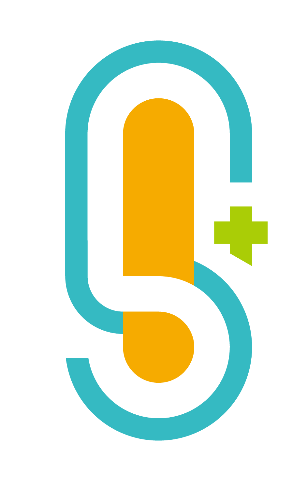
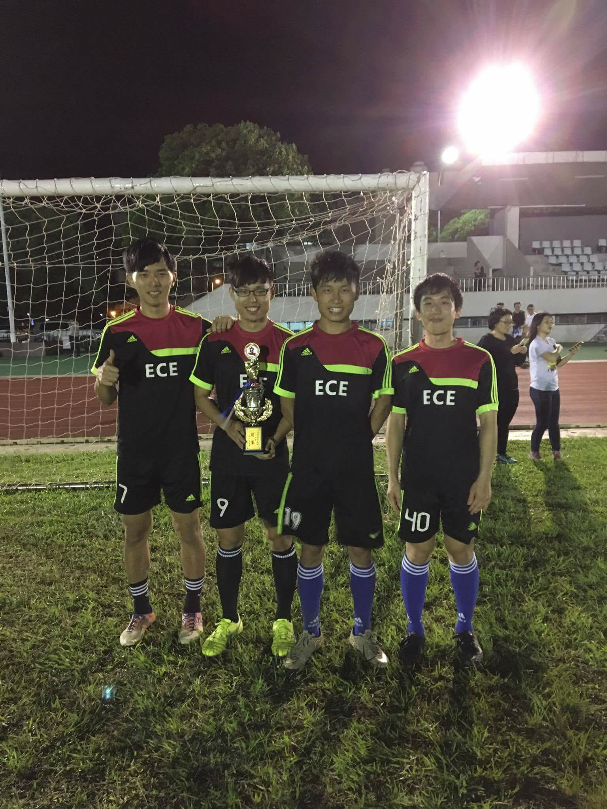
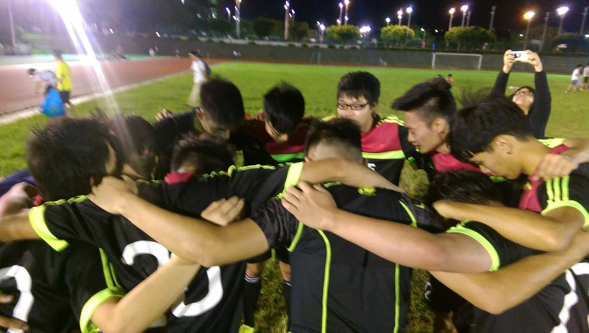
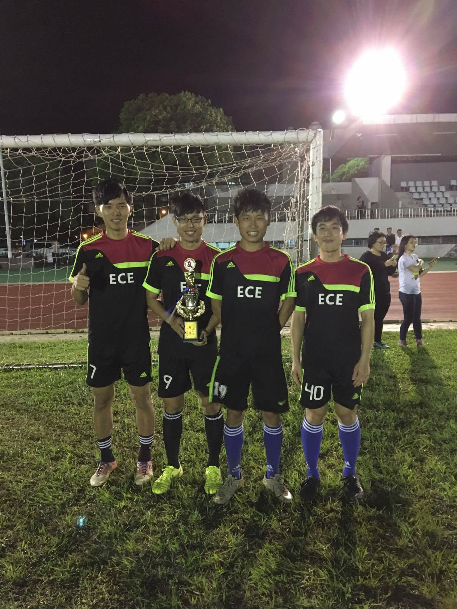
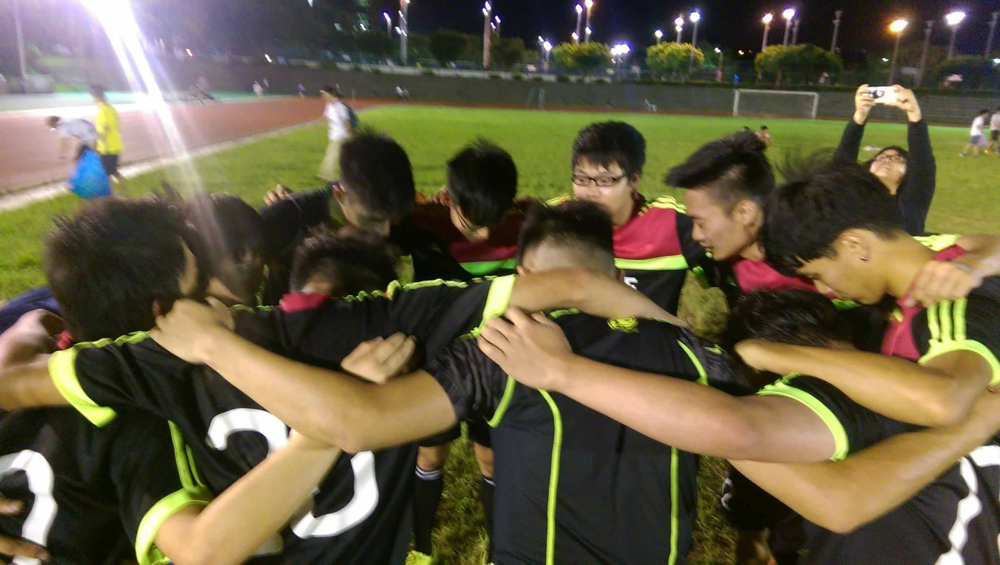

Ming Hsien Chien
Intern at Intel, Non-Volatile Memory Group·
Technical Intern
@Intel Corporation
Mar 18 - Now
B.Sc. in Electrical and Computer Engineering
@National Chiao Tung University
Sep 15 - Now

Project Researcher
@National Taiwan Science Education Center
Mar 14 - Mar 15
I am currently intern at Intel Corporation, where I support SSD system level validation. Besides, My research experience is including in IC desgin, embedded system and algorithm design.
I want to dedicate in back-end of IC industry like desgin for testability and verification in my future.
Here is my curriculum vitae, last upadated Jan. 2018.
Honor_and_Award
- 3rd in International Science Fair &
International Special prize for American Society for Metals
Research Polylactic Acid Nature leaf fiber composite material, and use corn leaf fiber as a reinforcing material for Polylactic Acid and make the length of the corn leaf fiber. Finally, we improve property of the composite material Significantly.Paper Link
- The Second Prize of Object-Oriented Programming Final Project Contest
Magic adventure is a side-scrolling shooting game. I also practice concept of object-oriented programming on this project. Project Link
- Young Scientists Development Program
Foster potential students superior research talents in basic science and applied science. Pick up only 30 students from gifted classes in Taiwan and devote to cutting-edge research.
National Taiwan Science Education Center
Projects
- Power IC Desin
Design a low dropout voltage regulator, and improve its Load Regulation and Line Regulation.Project Link
- Analysis Of Social Network(Python)
We want to predict of Cyber Relationship Addiction, and extreacted features from social media platform and establish the model(SVM) to detect potential Cyber Relationship Addiction.
Project Link - Duckiebot-embedded system(Python)
1.Apply tensorflow object detection API for rasberry pi2 and successfully distinguish ten features in real world.
2.Carry out Apriltags detection, bluetooth manipulation, and wheel calibration on the robotic operation system.
Project Link - Algorithm of Intersection Manager(C++)
1.Simplfy a traffic jame problem to the computing model.
2.Implement an effective greedy algorithm to manage vehicles and reduce waiting time by 30%.
Project Link
Club
- NCTU ECE Soccer Club
I was the captain of this soccer team. With refining club coherence and cultivating teamwork, we got 3 interschool champions and 4 champions at NCTU .
- NCTU ECE Student Association
I'm the Vice Minister of NCTU ECE Academic Student Association. I devoted to establish the platform and help students realize field of research of all labs in NCTU ECE.Over 3000 viwers watched these videos in a semester.
Video Link
 


